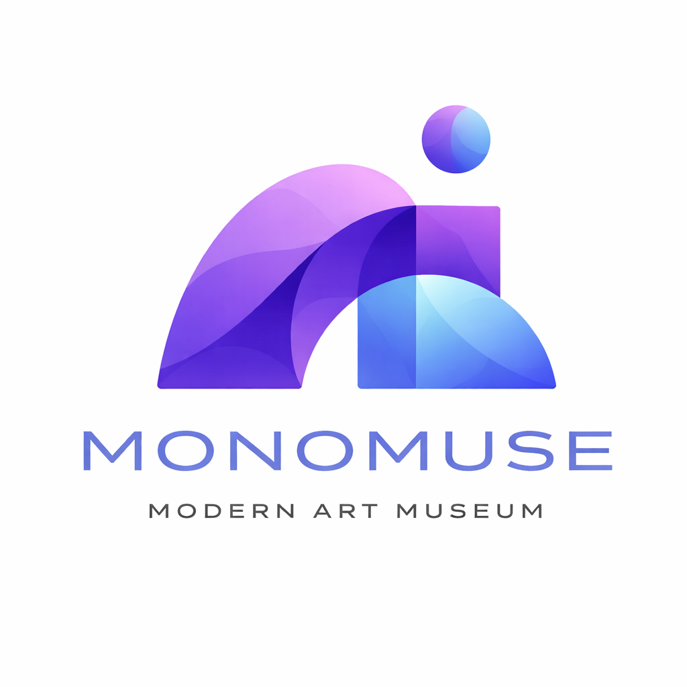

MonoMuse is a contemporary museum dedicated to exploring the intersection of art, technology, and human creativity. Through immersive exhibitions, interactive installations, and rotating collections, MonoMuse invites visitors to discover how digital innovation is transforming the way we create, experience, and understand art. Whether you are a first-time visitor or a returning member, our exhibitions offer new perspectives on the role of technology in culture and everyday life. Plan your visit to experience cutting-edge exhibitions, hands-on experiences, and events designed to inspire curiosity and creativity.